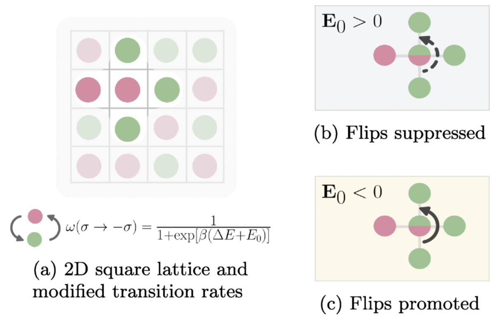
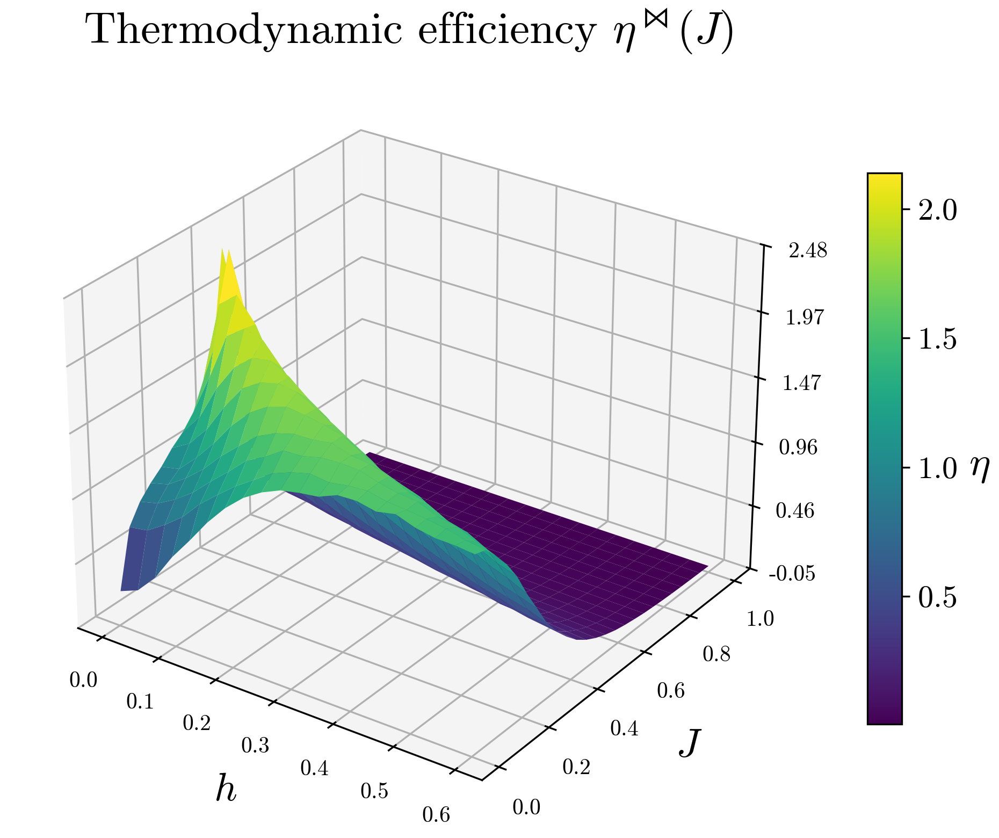
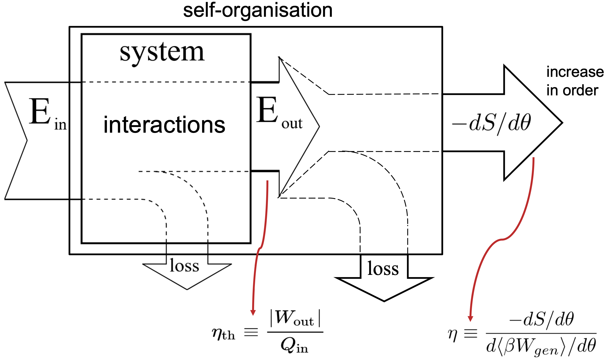
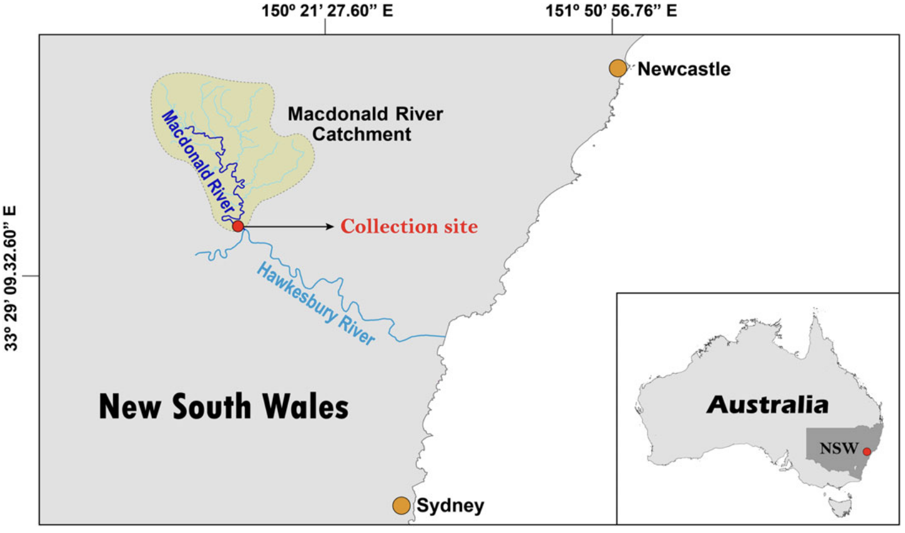
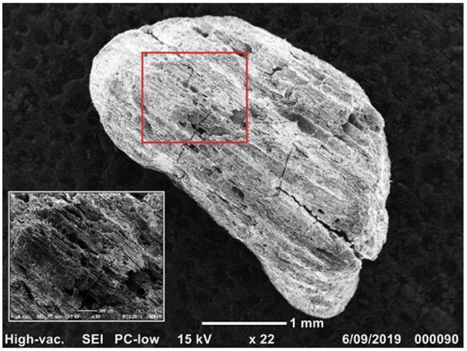
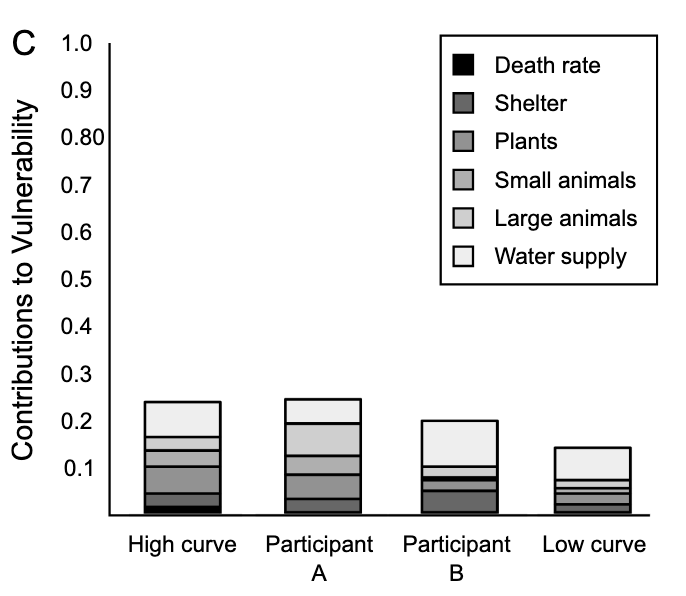

Thermodynamic efficiency of self-organization in nonequilibrium steady states
Physical Review Research. (2026)

Physical Review Research. (2026)

Journal of Physics: Complexity. (2026)

Royal Society Open Science. (2025)

Radiocarbon. Cambridge University Press. (2023)


Volcanica. (2018)